Des exemples à modifier
Onze exemples sont fournis avec Cahutin. On en ouvre un depuis l'écran d'accueil, on remplace les photos et les textes, et on imprime. Les zones en pointillés attendent vos photos.
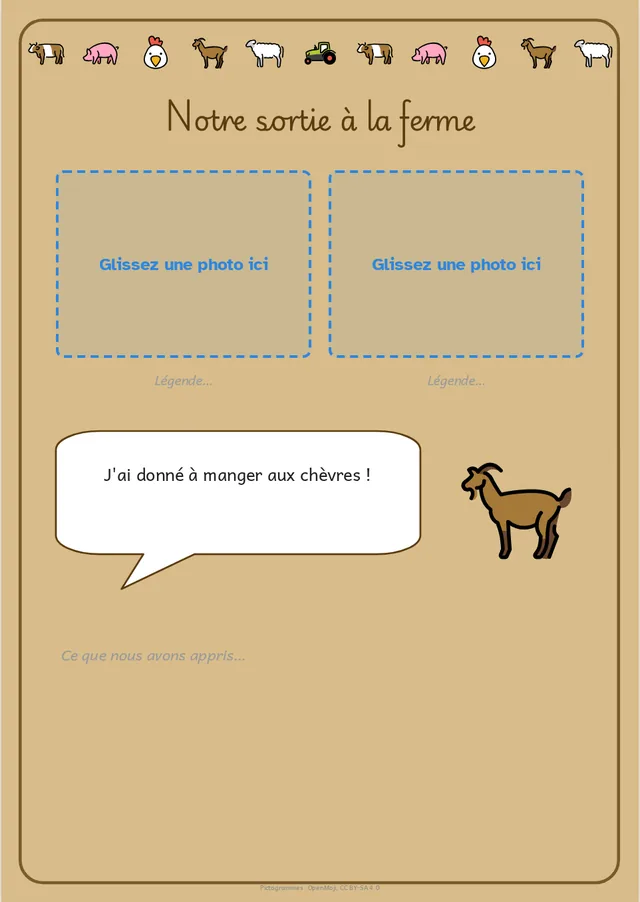
Sortie à la fermeFrise d'animaux, photos légendées, bulle de parole.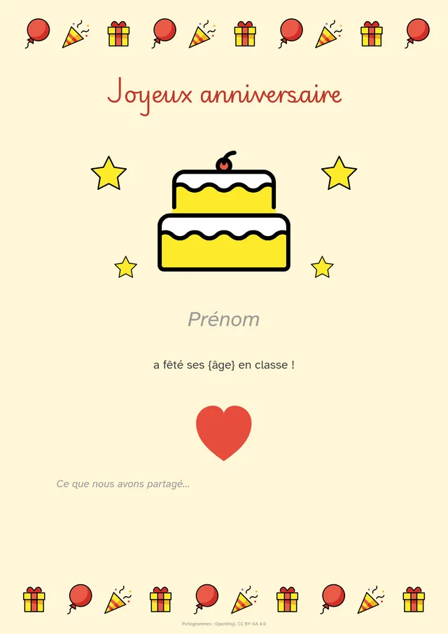
Joyeux anniversairePrénom et âge remplis avec la classe.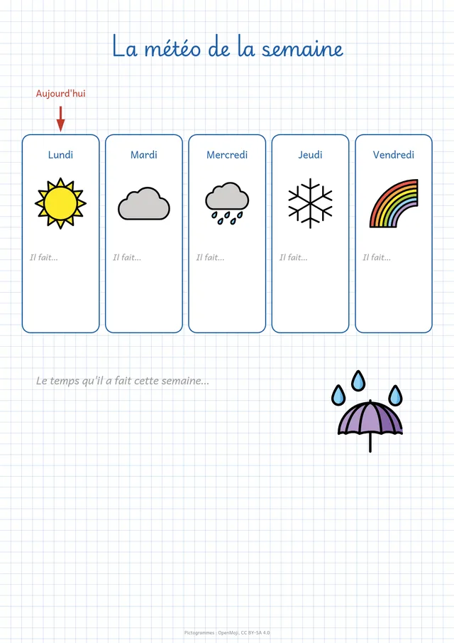
La météo de la semainePetits carreaux, une colonne par jour.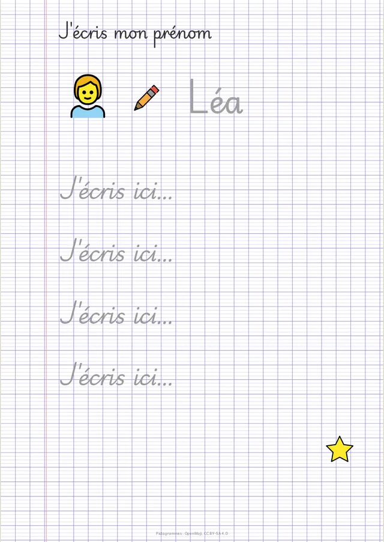
J'écris mon prénomLettres creuses, lignes Seyès à repasser.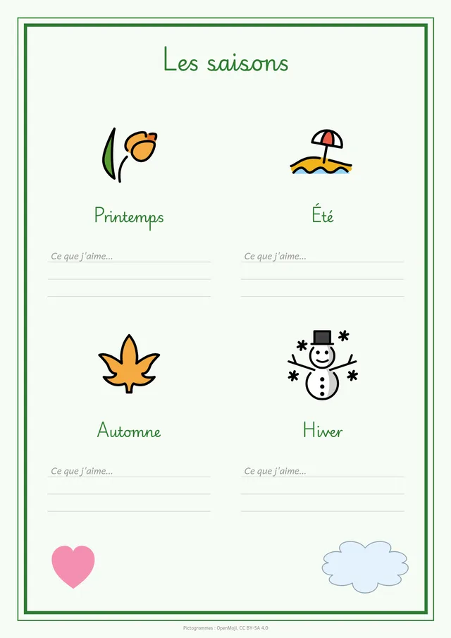
Les saisonsQuatre cases, une image et des lignes par saison.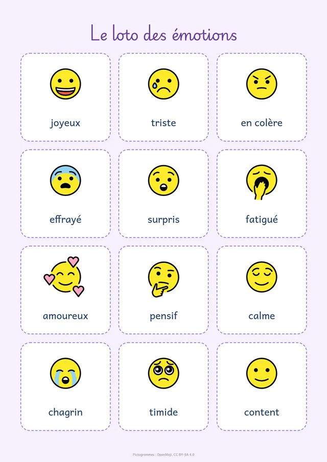
Le loto des émotionsDouze cartes à découper.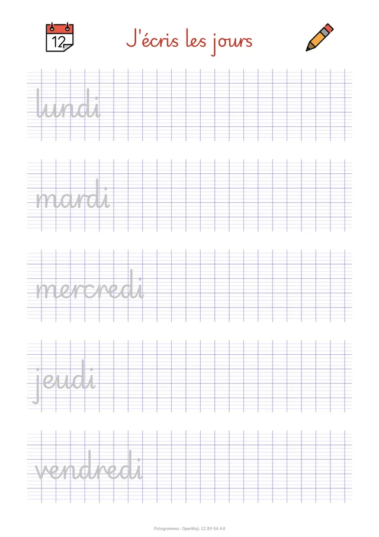
J'écris les joursCursive à repasser sur Seyès.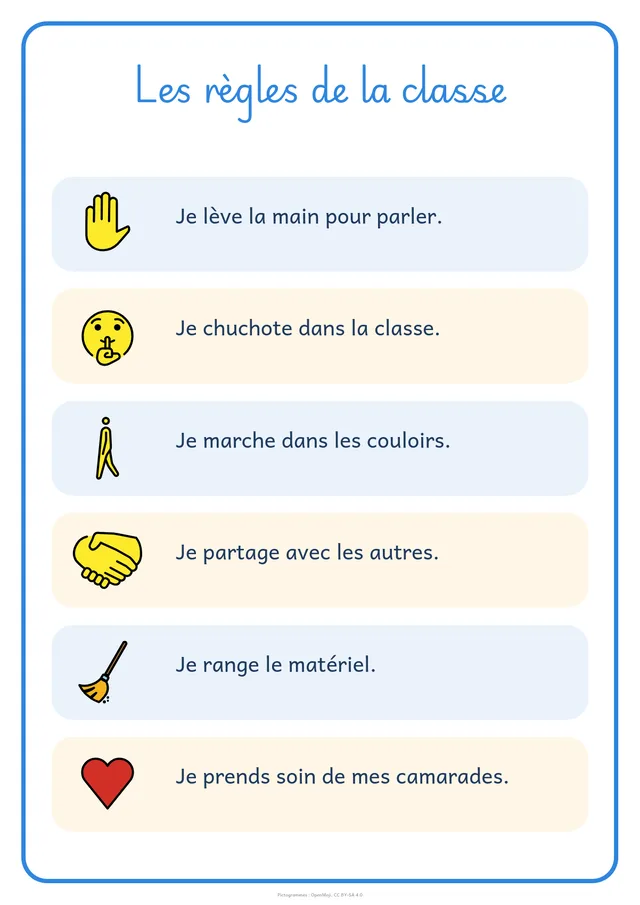
Les règles de la classeUne affiche A3, ou deux feuilles A4.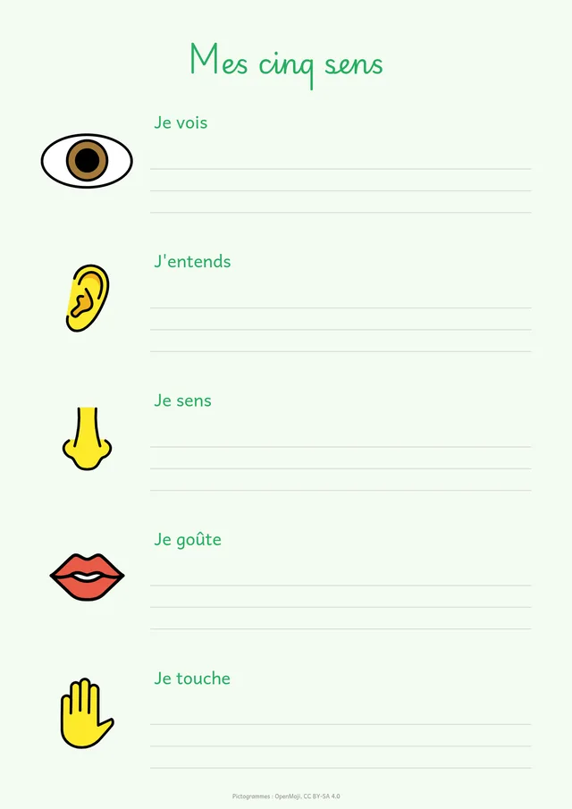
Mes cinq sensPictogrammes et lignes d'écriture.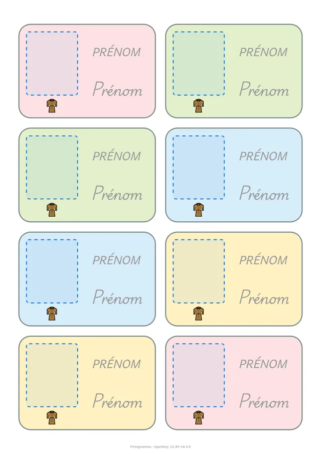
Étiquettes de porte-manteauRemplies d'un clic avec la classe.
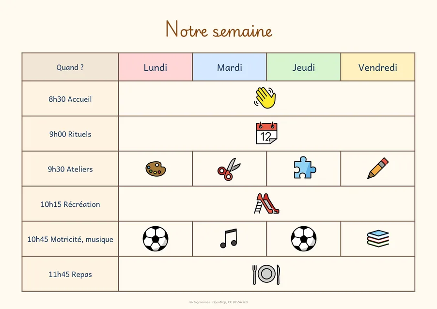
Ce qu'on peut faire
Partir d'un modèle
Grille de photos, récit, étiquettes, affiche, et des modèles pour la classe : memory et loto des prénoms, lettres mobiles, tableau des présences, affiche des anniversaires. Ou vos propres modèles, à partager entre collègues.Remplir avec sa classe
On colle la liste des prénoms une fois, ou on l'importe d'un tableur ou d'ONDE. Cahutin remplit ensuite une planche d'étiquettes (prénom en capitales, en script et en cursive), une page par enfant avec son âge, ou l'affiche des anniversaires.Poser ses photos
On importe un dossier entier, on glisse chaque photo dans sa case, on la recadre d'un double-clic. Pour un enfant sans autorisation photo, on floute son visage d'un clic.Écrire avec des polices d'école
Cursive (Playwrite FR Moderne), écriture lisible pour les débutants (Andika), police pour les élèves dyslexiques (OpenDyslexic). Lettres à repasser, lignes Seyès dans un cadre, styles Titre, Consigne, Prénom.Décorer et organiser
Plus de 2 000 images à chercher en français, dont les rituels, le matériel et les émotions ; cadres, frises, fonds Seyès ou kraft. Des tableaux, un bloc répété sur toute la page, des repères de découpe.Imprimer ou partager
A5, A4 ou A3, une affiche A3 sur deux A4, des cartes en recto-verso ; PDF, ou fichier pour LibreOffice où tout reste modifiable. On peut aussi reprendre une fiche Word ou PDF existante.
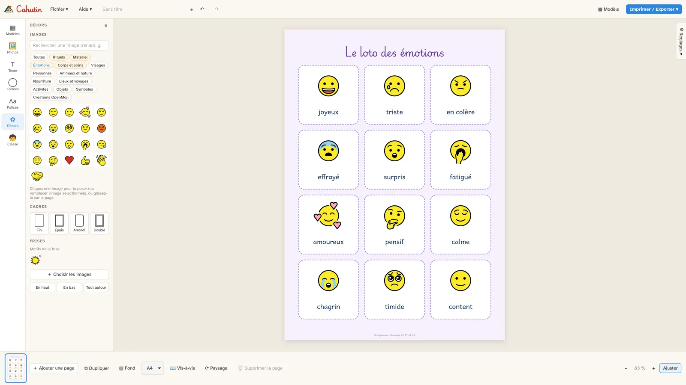
Ce qu'on peut vous promettre
Les photos des élèves restent sur l'ordinateur
Cahutin fonctionne sans internet, sans compte et sans serveur. Rien n'est envoyé, ni à nous ni à personne. Une seule connexion est possible, si vous l'acceptez : une fois par jour, Cahutin regarde sur GitHub si une nouvelle version existe. Le repérage des visages à flouter se fait lui aussi sur l'ordinateur, sans savoir qui est qui.Gratuit, pour de bon
Pas de version payante, pas d'abonnement, pas de publicité. Installez-le sur autant d'ordinateurs que vous voulez, à l'école comme à la maison.Libre
Cahutin est publié sous la licence publique de l'Union européenne (EUPL 1.2). Son code est public : chacun peut l'étudier et l'améliorer, et toute version modifiée doit rester libre.Vos documents vous appartiennent
Un document Cahutin est un fichier sur votre ordinateur, avec ses photos dedans. Il s'ouvre aussi dans LibreOffice après export, sans dépendre de Cahutin.
Installer
Windows 11
- Télécharger l'installeur (fichier qui se termine par
x64-setup.exe). - L'ouvrir. Aucun mot de passe administrateur n'est demandé.
- Si Windows affiche « Windows a protégé votre ordinateur » (l'installeur n'est pas encore signé) : Informations complémentaires, puis Exécuter quand même.
- Accepter la licence et suivre l'installation. Cahutin apparaît dans le menu Démarrer.
Linux
Le fichier .AppImage fonctionne sur toutes les distributions : le rendre exécutable, puis le lancer. Le fichier .deb s'installe sur Debian, Ubuntu et leurs dérivées.
Pour vérifier un fichier téléchargé : la politique de signature.
Les nouvelles versions
Installer la nouvelle version par-dessus l'ancienne : documents et modèles sont conservés. Si vous l'avez accepté, Cahutin vous prévient lui-même quand une nouvelle version sort.
Vous utilisiez Carnet ?
Cahutin est son nouveau nom. Il reprend vos modèles personnels et vos polices ajoutées, et vos fichiers .carnet s'ouvrent comme avant. Carnet peut ensuite être désinstallé.